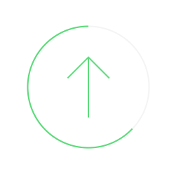

Change Sensing Interval
{{ readingInterval }}s
Capture Environmental Status
{{ capturingBtnText }}
Add recommendation page
Location
{{ transferData?.location.address }}
{{ sensor.displayName }}
{{ sensor.sensorReading }}

Successfully uploaded!
Redirecting to {{ successRedirectTimeout }} secs
Uploading...
Location
{{ transferData?.location.address }}
{{ sensor.displayName }}
{{ sensor.sensorReading }}